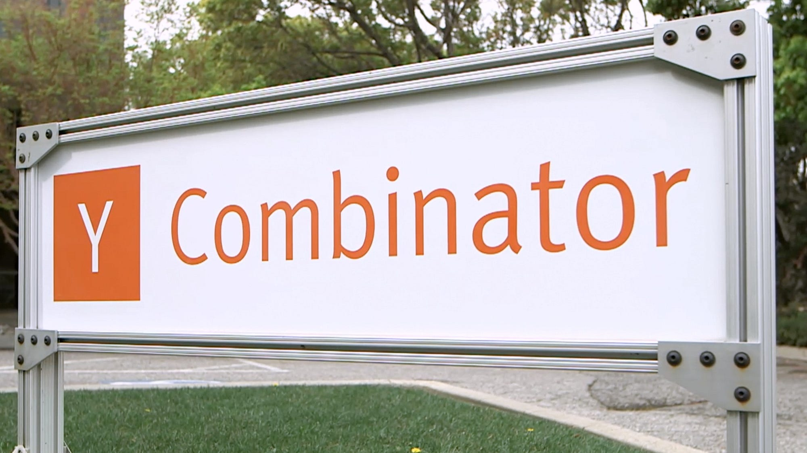
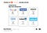

YC as startups marketplace


From the 1281 startups analyzed 66 ended acquired by another company or startup. That’s 5.15% (66/1281) of the shelve of startups of YC.
From the 20 top tech companies below
5 acquired a YC startup alumni, a total of 18 startups acquired by one of these top 20 tech companies. It is 1.4% (18/1281) of the overall YC basket of startups that ended into the cart of big tech companies. Maybe it is relevant to point out that Google is, in terms of the number of startups, the biggest acquirer and nor Microsoft neither Apple bought a YC startup.
here is the overview

In the basket of 1281 startups that are alumni of YC, 4 were about BOOK and one of them is now dead. It is 0.4% of the total number of startups and here are these startups about Books.
Scribd (S06): Join the membership for readers, and get monthly access to books, audiobooks, and more
HipType (S12) Dead: Hiptype brings analytics and targeted advertising capabilities to the most popular eBook platforms
Booktrope (W15): Booktrope has pioneered an entirely new choice in book publishing
Beek (W17): Biggest book review site in Latin America. Tomorrow — Biggest everything review site in Latin America
Book dojo as you may know is about books but data-driven books, book-driven platforms, book communities, and book lovers.
if you Need to onboard yourself into Book Dojo a domain-specific startup here it is.
Soon the first data-driven book here